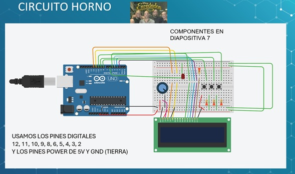
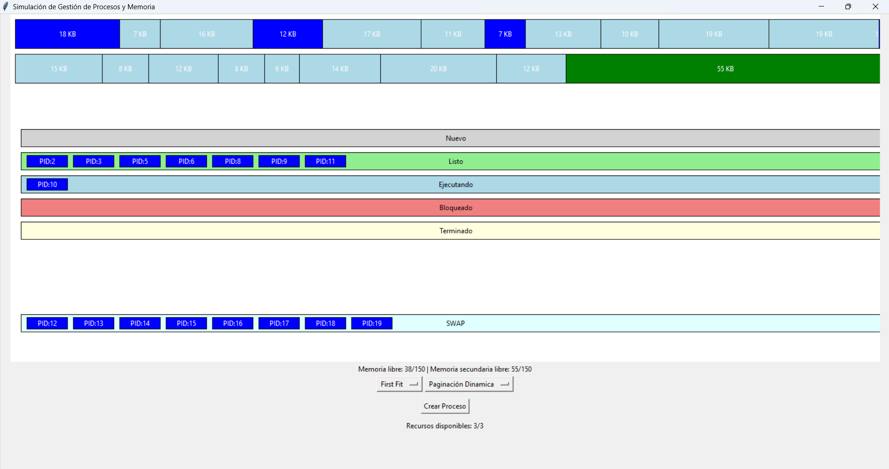

← Volver al inicio
Arduino & IoT / Makers
Prototipos físicos y simulaciones


Simulador de Procesos en Memoria
Representación física del manejo de procesos y memoria de un Sistema Operativo, usando LEDs y módulos controlados por Arduino.